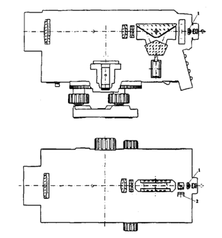
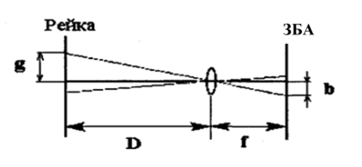
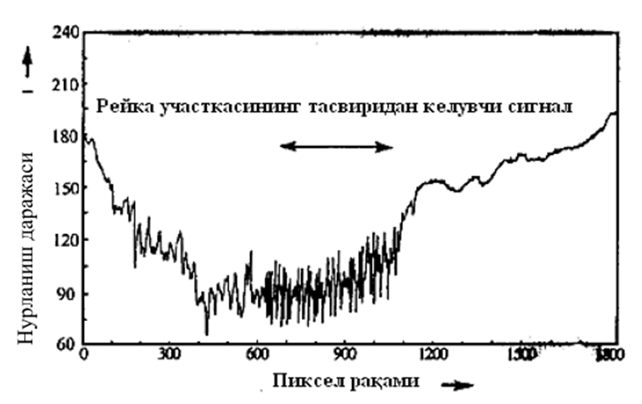
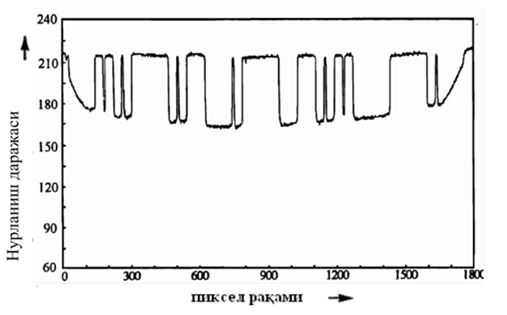
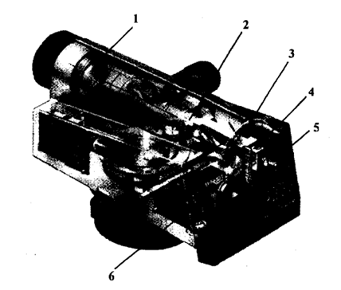
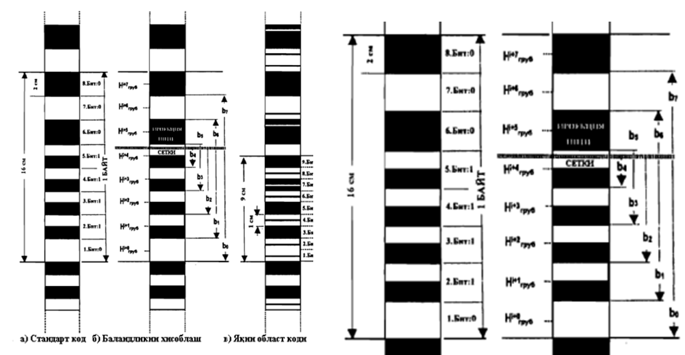

Мавзу: Trimble DINI 07 рақамли нивелирида съёмка қилиш
Reja.
1. Рақамли нивелирнинг конструкцияси
2. Саноқ олиш принципи
DiNi 10/20 нивелирининг оптик-механик схемаси
келтирилган (ён томондан кесимда кўриниши ва юқоридан кўриниши).
Кўриш трубаси қаратилган рейканинг кесмаси, объектив ёрдамида ва компенсаторнинг
ҳаракатланувчи ва ҳаракатланмайдиган элементларининг маятник осилгичига осилган фокусловчи
линзалари, ҳамда ёруғликни бўлувчи линзалар орқали иплар тўри туширилган текисликда ва
қабулловчи қурилмаларда проекцияланади.
Окуляр ёрдамида 1-позицияда иплар тўри текислигида рейканинг тасвирини кузатиш мумкин. Кўриш
трубасини фокуслаб, иплар тўри майдонида рейканинг яққол-аниқ таъсвирини ҳосил қилишга
эришилади, худди шу вақтда ва қабулловчи қурилманинг сезувчан майдонида 2-позицияда, коднинг
аниқ тасвири шакилланади. DINI нивелирларида қабулловчи қурилманинг сезувчан майдонида
тасвирни шакиллантириш учун кўринувчи нурлар қўлланилади. Қабулловчи қурилмадаги сигналлар
тез ишлайдиган аналог-рақамли ўзгартирувчиларга узатилади. Олинган рақамли қийматлар
асбобнинг хотирасида сақланади нивелирлаш рейкалари кодларининг рақамли тасвирлари,
тасвирларни қайта ишлаш дастурлари ёрдамида қайта ишланади.

Нивелирнинг нормал ишлашини таъминлаш учун елканинг Dmaх максимал узунлигида ЗБА-қабулловчи
қурилманинг сезувчанлик майдонидаги штрих код тасвири, ЗБА-битта сезувчан элементининг
(пикселнинг) ўлчамлардан катта бўлиши керак. Фақат шу ҳолда, тасвирларнинг элементлари билан
сигналларни интерполирлаш йўли билан штрих код ҳолати юқори аниқликда аниқланади.
Қабулловчи қурилма сезувчан майдонидаги штрих код таъсвирининг кенглиги

Асбоб ва рейка орасидаги масофа 100 метрга тенг бўлган ҳолат учун қабулловчи қурилманинг
чиқишидаги сигнал келтирилган

Одатда нивелирлаш рейкасининг узунлиги L 3 метрга тенг, рейка коди штрихининг кенглиги q 2
смга тенг, демак ҳисоблар бўйича, N≈7,5 ёки сўз узунлиги N*q ≈ 15 см. DiNi нивелирларининг
техникавий характеристикада, рейка бўйича автоматик равишда саноқ олиш каналининг оптик
системасининг бурчак майдони 0,3 метрнинг 100 метрга нисбати бўйича аниқланади, демак, катта
елка узунликларида ишончлиликни таъминлаш учун иккита сўзни аниқлаш орқали бажарилади.

DiNi 12 нивелирида битта ўлчаш вақти 3 секундни ташкил этади, DiNi 22 –нивелири билан – 2
секундга яқин. Бунга рейкани ёритишга боғлиқ бўлган, сезувчи майдонни ёритиш давомийлигини
аниқлашга кетган вақт, ҳамда компенсаторнинг ҳаракатланувчи элементларнинг тебраниш туфайли
содир бўлувчи таъсвирни титрашининг таъсирини минималлаштириш учун кўп сонли ўлчаш
натижаларини ўртачасини чиқаришга ва ҳавонинг конвекциясига кетган вақт киради. DiNi 10Т /
DiNi 12Т модификация рақамли нивелирларда горизонтал йўналишларини аниқлаш учун саноқ
олишнинг абсолют оптико-электронли системасидан фойдаланилади. Бу типдаги нурланиш даражаси
DiNi 12Т нивелири тахеометр қаторига киради. Ҳисоблашнинг абсалют системаси ± 5'' хатолик
билан бурчак ўлчашни амалга ошириш имконини беради.
Trimble фирмасининг (олдинги СarlZeiss) рақамли нивелирларида рейка бўйича баландлик
ҳисоблашни иккита турли, масофага боғлиқ бўлган кодлар қўлланилади. Нивелирдан 3 метрдан 100
метргача бўлган масофада ўрнатилган рейка бўйича саноқ олиш учун стандарт код, 1,2 метрдан 4
метиргача бўлган масофаларда яқин область(атроф) коди қўлланилади.

1-объектив, 2-фокусловчи линза, 3-ҳаволи демпферли компенсатор, 4-бўлувчи
призма, 5-окуляр, 6 - ЗБА-қабулловчи қурилма.
Иккала ҳолатда ҳам, абсолют ва бир хил(икки маъноли бўлмаган) баландлик ҳисоблаш
имконини берувчи кодлар тўғрисида гап боради. Стандарт код бинарли ҳисобланади, «Сўз» коди 8
бит ёки 1 байт ўлчамга эга. Ҳар бир бит 2 сантиметр кенгликга эга бўлади ва бир хил миқдорли
иккита қисмдан ташкил топган бўлиб, уларнинг ҳар бири 1 см кенгликга эга. Булар туфайли
битлар ҳосил бўлади, улар бир хил-оқ/оқ ёки қора/қора йўллардан ёки турли йўллардан ташкил
топган-оқ/қора ёки қора/оқ битлардан ташкил топди. 1 га -қора ёки оқ бир хил рангли бит, 0
га иккита турли ранг қора/оқ ёки оқ/қора тўғри келади.
Рейканингбарчаузунлигибўйичатурлиқийматгаэгабўлган«сўз» кетма-кет туширилади, улар
детектирлашвақабулловчиқурилманингчиқишидагисигналникейинчалик
аналог-рақамлиўзгартиришйўлибиланнивелирнингқабулловчиқурилмасинингсезувчанмайдонидапроекциялангандансўнгбирмаънодааниқланишимумкин.
Бунингучун, тўлаiбайт қийматинианиқлашимкониятига доимо эгабўлишкерак, предмет
майдонидагикоднидешифрлашобластига 30 сантиметр рейканингкесмаситўғрикелади, яъни «Сўз»
ўлчамидаикки марта ошади. 3 метрлирейканиҳарбирB 𝐵_(𝑖+𝒏)битигатартибрақамибириктирилади,
масалан, 0,1,2, ..., 149. Байтгатўғрикелувчимайдоничкарисида,
қўполсаноқолишда,ҳарбирбитнингўртачаҳолатианиқланади.
